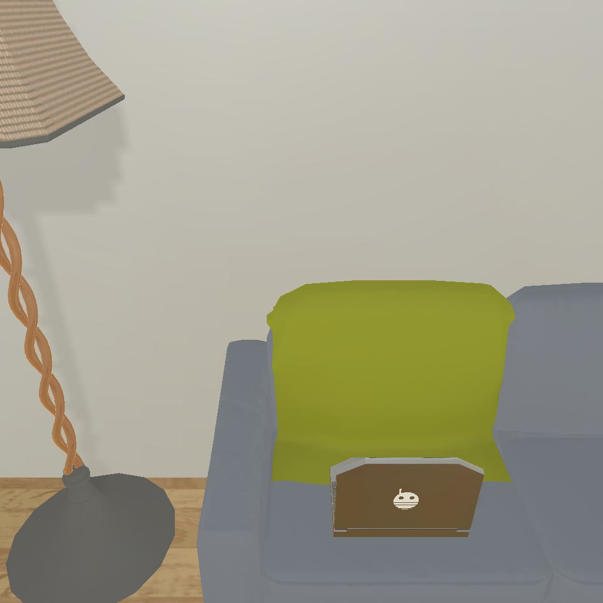

---------------------------------------------------------task: 4---------------------------------------------------------
--------------------------------------------------------------------------------------------------------------------------------------------------------------------
--------------------------------------------------------------------------------------------------------------------------------------------------------------------
Step:--------------------------------------------------------------------------0-------------------------------------------------------------------------------
----------------------------------------
VLM Prompt:
Image1:
**Instruction**
1. Analyze the provided images to identify all visible household objects and compare the difference between images (e.h. whether the object is opened or not and taken on hand or not), focusing on those relevant to the task description "look at statue under the floorlamp."
2. Use the analysis of images and the task hint "The agent must find an object of the desired type, locate and turn on a light source with the desired object in-hand." to answer the question: what is the most reasonable action in the choices for the task description "look at statue under the floorlamp"?
3. Decide and write the answer using the template: The answer is: (i): , where i is the real number. If there is no desired object in images, search every place based on **Initial Observation** to find the object. And if no one is exactly correct, choose a similar answer.
**Initial Observation**
You are in the middle of a room. Looking quickly around you, you can see armchair (1), coffeetable (1-2), sidetable (1), garbagecan (1), drawer (1), sofa (1), diningtable (1)
**Answer Choices**
(1): go to armchair 1
(2): go to coffeetable 1
(3): go to sidetable 1
(4): go to garbagecan 1
(5): go to drawer 1
(6): go to sofa 1
(7): go to coffeetable 2
(8): go to diningtable 1
**Answer**
Let's think step by step by following the instructions.
----------------------------------------
----------------------------------------
Original Response:
Image 1 Analysis: Visible objects include an armchair, a floor lamp, and a small table or sidetable next to the armchair with an object that appears to be a statue on top of it.
Task Description Analysis: The task is to "look at the statue under the floorlamp." The floor lamp is visible in the image, and there is an object that resembles a statue on the sidetable beside the armchair, which is positioned under the floor lamp.
Based on the task hint, the agent must find the statue, locate and turn on the light source with the statue in hand. However, the statue is already under the floor lamp, so the agent does not need to pick it up but just turn the light on.
From the Initial Observation, the sidetable is mentioned as an object in the room and is also visible in the image with a statue on top of it.
The most reasonable action for the task description "look at the statue under the floorlamp" would be to go to the sidetable where the statue is and turn on the floor lamp to look at the statue.
The answer is: (3): go to sidetable 1
----------------------------------------
----------------------------------------
>>> Refine Original VLM Response and Get Pure Action: go to sidetable 1
----------------------------------------
-----------------------------------------------------------------
Running time: 8.467235326766968 seconds
Total Money: 1.2020600000000004
-----------------------------------------------------------------
-----------------------------------------------------------------
Text Observation:You arrive at loc 2. On the sidetable 1, you see a statue 1, and a pen 1.
-----------------------------------------------------------------
UNSUCCEED